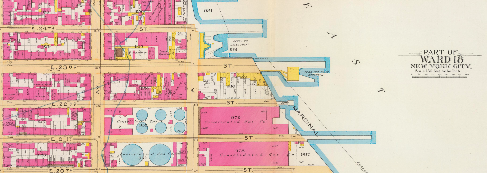

Urban Ecologies Methods 1: Course Expectations
Fall 2025 | PGUD 5160 - CRN 2247
 Source: https://atlas.developmentseed.org/all/ | Connectivity Atlas
Faculty Instructor
- Stephen Metts | Part Time Associate Professor - NSSR & Parsons School of Design
Attendance
As this course is highly dependent on sequential learning; that is, relying on learned skills to adopt new ones, maintaining good attendance in this course is critical. Certainly the unexpected happens, but if students display a pattern of attendance issues, it can become a significant problem. Further, it is critical to be on time to class. For this Fall semester, this entails making sure that you are present and ready for class at 12:10pm Fridays. A significant portion of the participation grade involves consistent attendance and being ready for the class meeting each week. Attendance will be taken for the Friday meeting; attendance records will then be kept on a weekly basis both within CANVAS and at Starfish.
Course Communication
Throughout the course, students are expected to utilize course material covered during each lecture and lab to accomplish weekly technical assignments. It is often the case that each and every technical detail is NOT addressed in either lecture or lab sessions. This requires that students maintain a degree of self sufficiency in problem solving and communication to seek answers to technical blocks. The course Urban Ecologies Methods 1 - PGUD5160 - Fall2025 will have a channel devoted to getting help from fellow students and the course instructor.
A portion of the participation grade is devoted to good communication and problem solving strategies. Typically, each week students will receive a grade and short feedback for the technical assignment of the previous week so that students are able to build on their achievements and address any technical areas for improvement to be successful throughout the course.
Asking well-formed technical questions is a core proficiency for any technical skillset, certainly for data science. In addition to Slack, the following online resources are good options for information and technical solutions for R programming. For immediate issues, Stack Overflow is arguably the best option:
- Official Documentation & Guides
- R Project Documentation: Official manuals, reference guides, and FAQs.
- RStudio Resources: Tutorials, webinars, and articles from Posit (formerly RStudio).
- Community Q&A Forums
- Stack Overflow (R tag): Most popular Q&A site for R programming issues. Search existing questions or post your own.
- RStudio Community: Focused discussions about RStudio, tidyverse, and R in general.
- Reddit r/rprogramming & r/datascience: Discussions and solutions from the community.
- Newsletters, blogs & Mailing Lists
- R Weekly: Weekly roundup of R news, tutorials, and packages.
- R-help Mailing List: Long-standing email list for technical support.
- R-bloggers: Aggregates blog posts from experts on various R topics.
- Tidyverse Blog: Updates, tips, and tutorials on tidyverse packages.
Data Transfer & Storage
It is highly recommended that students utilize cloud storage for backup of each assignment as well as final projects. Leaving projects and data on a computer drive without backup is not ideal. Backup your data often and in multiple locations. A USB drive will take care of basic workflow backup; but it should not be the primary - or only - backup device for your work in this class. Make sure to zip compress your work before transport to a portable drive and/or cloud storage. Cloud storage options include Google Drive, Dropbox, Box, ect.
Ideally, projects within R are also version controlled utilizing Git typically with GitHub. While version control is highly recommended and a great option for keeping track of a project and making sure backup is built into a project workflow, it is not the primary focus of this course.
Core Computer Skills
Data science is an expansive technical field. At its most advanced, it requires many adjacent technical skills, all of which can be initiated in this class. However, a prerequisite skill set is necessary to do well in this class. This includes the following:
- Beginning to intermediate database/spreadsheet skills (Excel, Google Sheets)
- Saving and exporting files as PDF; screengrab captures.
- Essential navigation and use proficiency with the Windows PC Platform and/or the macOS Platform within which R and RStudio operate.
If you feel that you need to brush up on these computer skills, there are many resources online, first and foremost YouTube which has numerous videos on every technical issue imaginable that you will likely come across in R and RStudio.
Further, all students are required to be signed up to the course Urban Ecologies Methods 1 - PGUD5160 - Fall2025 prior to the first class meeting - Friday, 08/29/25.
Slack Course Invitation Link: Slack Invitation
Slack Invitation Links go stale pretty quickly; join as soon as you can. If the link above expires, let instructor Metts know via Email.
Course Software
This course utilizes the R and RStudio platform to accomplish data tasks. In addition to the main software components of the course, there may be several utilities that are largely cross-platform that will require online access and a browser to either access or download.
Course Management
We will be utilizing CANVAS as the course management platform for the course. Course instruction, assignments, lectures and labs are linked to CANVAS pages for each class session; note that here is not much actual content that resides within the course CANVAS module. You will use CANVAS primarily to access instructional materials and necessary data; as assignments are completed, upload your final work to the assignment submission section for each class session within CANVAS. Further, students are required to keep abreast of ongoing postings on the Urban Ecologies Methods 1 - PGUD5160 - Fall2025 and contribute their own technical questions as well as solutions, links, tips, insights. Throughout the course, the instructor will cross-post important announcements both as announcements within CANVAS, and announcements within Slack.
Maintaining Account Logins
Throughout this course we will be utilizing a Google account, as well as gaining free site accounts through various data and technology platforms. These accounts often require logins, passwords and some email communication. It is your responsibility to keep these accounts organized in some fashion so you can readily access them both in and outside of class.
Weekly Assignment Policy
Weekly assignments are due prior to the next Friday class, uploaded by Thursday night at midnight (11:59pm).
- If an assignment is late, 5-10 points are deducted from total score during the first week.
- If an assignment is late following the first week up to three weeks, half credit will be given for a completed assignment. After three weeks, no credit will be given for a late assignment submission.
The course will remain open within CANVAS until the end of December, 2025. It is recommended that students build a PDF archive of weekly materials for future reference. Alternatively, the course repository at Github will be available indefinitely going forward after the conclusion of the course.
Credit Course Load
Generally for an graduate level course of 3 credits, it is assumed that students will have a ‘homework’ load of 1-3 hours per credit. This works out to 3-9 hours per week outside of the approximately 2 hours we meet each week during the lecture and lab sessions. Although most weeks will not require this level of attention, there will be ‘harder’ weeks, and working in a bit more space in your weekly schedule for these weeks will help you master the theory and technical components of the week’s work. Generally, make sure that you schedule ample space into your Fall 2024 schedule to allow for optimum learning and mastery. It is challenging to learn effectively if you are over-scheduled and unprepared. As a rule of thumb, you should plan for the approximately 2 contact hours for the lecture, and then allow for at least a half-day of relatively uninterrupted attention to complete the weekly assignment. Alternatively, pick 2-3 days following the lecture and allow for separate 1-2 hour sessions for the assignment completion.